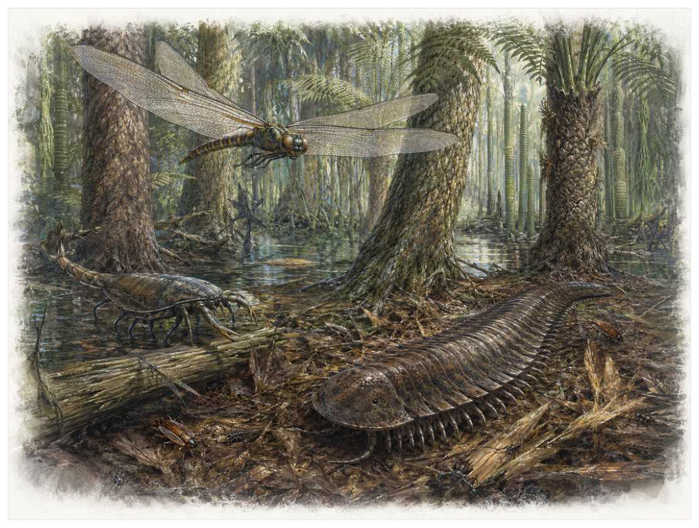

第08篇 · 石炭纪：巨型森林、节肢动物与羊膜动物 · 第 26 章
巨型节肢动物：高氧、呼吸结构与生态机会
本篇主题:石炭纪：巨型森林、节肢动物与羊膜动物
煤沼森林改变大气与河流，陆地脊椎动物摆脱对水中繁殖的依赖。

本章科学复原配图 （用于呈现结构与生态关系, 不替代化石照片、测量数据与系统发育证据。）
石炭纪晚期至早二叠世对应的世界与现代地图和气候都不同。理解它不能从一只明星物种开始，而应从整个系统的限制开始。节胸类可长到两米以上，巨脉蜻蜓一类的翼展接近七十厘米，它们使石炭纪成为‘巨虫时代’的代名词。大气氧浓度偏高确实能改善昆虫气管系统的扩散和飞行性能，但体型还受温度、发育时间、蜕皮风险、食物质量、捕食压力和谱系自身结构约束。并非所有节肢动物都变大，也不是氧气一降低巨型种类就立刻消失。
进入这个时代
生态系统的真实声音不是巨兽咆哮，而是持续的摄食、分解、搬运和繁殖。每一具尸体、每一层落叶和每一次沉积扰动都会重新分配资源。在湿地林间，巨大的多足类沿枯木和根座之间爬行，翅脉密集的古蜻蜓在开阔水面巡飞。森林提供大量植物碎屑和隐藏空间，早期脊椎动物捕食者尚未完全占据空中与地表的所有生态位。氧气让某些设计的上限抬高，生态机会决定哪些支系真正接近上限。
在“巨型节肢动物：高氧、呼吸结构与生态机会”所覆盖的时间里，不能把地理与气候当作固定背景。海陆位置、海平面、河流或植被结构会改变资源可达性，同一性状在不同地区可能得到完全相反的选择结果。
以巨型节肢动物：高氧、呼吸结构与生态机会为例，物种数量并不等于生态功能。一个群落即使仍有许多物种，只要初级生产、授粉、礁体建造或大型植食等关键功能消失，食物网也会表现为深度崩溃。反过来，少数机会型物种高丰度并不代表系统已经恢复。 在本章中，这一约束具体落在“高氧提高气管输氧和飞行肌工作余量”这条关系上。
再从石炭纪晚期至早二叠世的时间尺度看，旧结构被重新利用是宏演化的常见路径。自然选择无法从零绘图，只能修改已有骨骼、膜、基因调控和生活史。后来承担新功能的结构，往往最初因完全不同的局部收益而扩散。它与“气管系统的尺寸限制”共同决定了后续变化可以沿哪些路径发生。
生态系统如何运转
把“高氧提高气管输氧和飞行肌工作余量”放进食物网，可以看到它不是孤立行为。它会影响种群密度、栖息地使用和尸体进入分解链的速度，并把后果传给并未直接参与互动的物种。
围绕“高氧提高气管输氧和飞行肌工作余量”，还要考虑空间异质性。一项在浅海、河谷或林冠有效的策略，移到深水、干旱内陆或开阔地便可能失去优势。因此同一支系常出现区域性扩张，而不是全球同步取代。 对巨型节肢动物：高氧、呼吸结构与生态机会而言，这一后果还会与“广阔湿地提供持续植物碎屑与幼体水域”相互放大或抵消。
理解“广阔湿地提供持续植物碎屑与幼体水域”需要区分个体事件与长期压力。偶然一次捕食只改变个体命运，持续数千代的稳定关系才可能推动牙齿、外壳、感觉器官或生活史发生方向性变化。
围绕“广阔湿地提供持续植物碎屑与幼体水域”，这一机制也会留下间接证据：咬痕、修复伤、足迹密度、粪化石、牙齿磨损和群落年龄结构分别记录不同环节。只有多种证据方向一致，行为解释才应上调可信度。 对巨型节肢动物：高氧、呼吸结构与生态机会而言，这一后果还会与“脊椎动物捕食者和飞行竞争者的后续增加可能压缩巨型节肢动物生态位”相互放大或抵消。
“脊椎动物捕食者和飞行竞争者的后续增加可能压缩巨型节肢动物生态位”还会改变可利用空间。一个支系若能进入新的水深、植被高度或沉积层，竞争会暂时减弱；随后追随者、捕食者和寄生者又会把新空间变成新的互动网络。
围绕“脊椎动物捕食者和飞行竞争者的后续增加可能压缩巨型节肢动物生态位”，从演化树看，相似关系可能在远亲中反复出现。功能相近不必意味着近缘，而同一祖先结构也可能被后代改作完全不同的用途；生态解释必须与系统发育互相校验。 对巨型节肢动物：高氧、呼吸结构与生态机会而言，这一后果还会与“高氧提高气管输氧和飞行肌工作余量”相互放大或抵消。
关键演化创新
在“巨型节肢动物：高氧、呼吸结构与生态机会”中，围绕“气管系统的尺寸限制”，讨论“气管系统的尺寸限制”时，最重要的问题是它解除哪一道限制。只要原有身体在运动、摄食、呼吸或繁殖上受约束，能够稍微缓解约束的变异就可能积累，最终产生看似跃迁的结果。 它首先需要在石炭纪晚期至早二叠世的生态条件下产生可测量收益。
就“气管系统的尺寸限制”而言，化石能较可靠地记录硬组织形态，却很少直接保留基因调控与短时行为。因此结构出现通常可信，最初用途和选择路径则应按证据标为主流解释或合理推测。 本章把它与“多次蜕皮下的大型化成本”并列，是为了显示复杂性状往往依赖多部分协同。
在“巨型节肢动物：高氧、呼吸结构与生态机会”中，围绕“多次蜕皮下的大型化成本”，从共同选择角度看，“多次蜕皮下的大型化成本”可能先服务旧功能，后来才参与今天最熟悉的用途。把最终功能倒推成起源原因，会把演化误写成有目的的工程。 它首先需要在石炭纪晚期至早二叠世的生态条件下产生可测量收益。
就“多次蜕皮下的大型化成本”而言，其宏观影响往往滞后于结构起源。一个创新可以先在小型、稀少支系中存在数百万年，直到环境变化或竞争者灭绝后才迅速扩张；“出现”和“成为主导”是两个不同事件。 本章把它与“翅与飞行肌的早期多样化”并列，是为了显示复杂性状往往依赖多部分协同。
在“巨型节肢动物：高氧、呼吸结构与生态机会”中，围绕“翅与飞行肌的早期多样化”，讨论“翅与飞行肌的早期多样化”时，最重要的问题是它解除哪一道限制。只要原有身体在运动、摄食、呼吸或繁殖上受约束，能够稍微缓解约束的变异就可能积累，最终产生看似跃迁的结果。 它首先需要在石炭纪晚期至早二叠世的生态条件下产生可测量收益。
就“翅与飞行肌的早期多样化”而言，这也提醒我们不要寻找单一关键基因。复杂性状由多个组织和调控网络协调，改变任何一环都可能产生不同结果，演化路径因此呈树状而非直线。 本章把它与“气管系统的尺寸限制”并列，是为了显示复杂性状往往依赖多部分协同。
生命群像：把物种放回生态网络
节胸类（Arthropleura）
节胸类（Arthropleura）存在于石炭纪至早二叠世。现有材料显示其大小约最大个体体长可能超过2米，生态位置接近地表大型碎屑食者或植食者。宽扁多节身体和坚硬背板适合在森林地面穿行让它成为理解本章主题的合适案例，但不意味着同一类群所有成员都采用相同策略。
对节胸类而言，相似环境可能让远亲出现相近轮廓，但内部结构会保留祖先限制。比较它与现代类比时，应只借用可检验的功能，不把现代动物的行为、社会制度或代谢水平整套复制到古生物身上。 这使“宽扁多节身体和坚硬背板适合在森林地面穿行”不能脱离其地表大型碎屑食者或植食者角色来理解。
现有认识建立在完整身体少见，巨大足迹、背板和头部新材料支持多足类亲缘；食性仍以间接证据为主之上。古生物学的可信度不是来自一件戏剧化标本，而是来自多件标本、多个地点和不同方法得到相容结果。新发现若改变比例或分类，并非此前研究毫无价值，而是证据边界被重新画清。
由节胸类这个案例看，从生态尺度看，它与本章其他成员共同维持一张网络。任何“最强”排名都会遗漏资源供应、幼体死亡、疾病和气候脉冲；真正决定长期成功的是种群能否在波动中不断完成繁殖。 它在石炭纪至早二叠世留下的记录，因此同时是第26章所讨论的形态史和生态史的一部分。
巨脉蜻蜓（Meganeura monyi）
在晚石炭世，巨脉蜻蜓（Meganeura monyi）以约翼展约60至70厘米的身体参与食物网。它不是孤立的“明星生物”，而是空中捕食性昆虫；大型翅和密集翅脉代表古蜻蜓类飞行捕食者决定它能利用哪些资源，也决定必须承担哪些成本。
对巨脉蜻蜓而言，它既可能是捕食者、植食者或工程者，也同时是其他生物的猎物、竞争者和分解资源。一次取食只是一瞬，长期生态影响来自成千上万个体反复搬运营养、改变植被或扰动沉积物。体型越大，这种工程效应通常越明显，但恢复速度也常越慢。 这使“大型翅和密集翅脉代表古蜻蜓类飞行捕食者”不能脱离其空中捕食性昆虫角色来理解。
支持该解释的材料包括翅化石可可靠估算翼展，身体质量和具体飞行速度依模型。若不同证据出现冲突，应优先报告范围而不是强行给出单值。例如体长会随参照类群变化，运动能力会随软组织假设变化，系统位置也会随新增性状重新计算。
由巨脉蜻蜓这个案例看，它也展示专门化的双面性：结构在稳定环境中提高效率，却可能在气候、食物或竞争格局突变时限制转向。灭绝不是对设计的道德评分，而是性状、地理范围和偶然事件相遇后的历史结果。 它在晚石炭世留下的记录，因此同时是第26章所讨论的形态史和生态史的一部分。
巨翅古蜻蜓（Meganeuropsis permiana）
认识巨翅古蜻蜓（Meganeuropsis permiana）要先放弃静态骨架印象。它生活在早二叠世，约翼展可达约70厘米以上，日常任务是作为大型空中捕食者维持能量与繁殖。比Meganeura更晚，证明巨型飞行昆虫延续到二叠纪只是这一整套生活史中最容易化石化的部分。
对巨翅古蜻蜓而言，成年体型往往主导复原，但幼体可能使用完全不同的食物和栖息地。若成长阶段跨越多个生态位，种群就同时依赖多套环境；其中任一环节中断都可能导致长期衰退。化石骨床的年龄结构因此比单具最大标本更能说明生态。 这使“比Meganeura更晚，证明巨型飞行昆虫延续到二叠纪”不能脱离其大型空中捕食者角色来理解。
我们之所以能够作出上述判断，主要因为堪萨斯翅化石支持巨大尺寸，但其生态并非来自完整身体。单一结构通常有多种功能解释，所以还要查看磨损、病理、肌肉附着、沉积环境和近缘比较。计算模型能排除不可能姿势，却不能自动恢复没有保存的软组织。
由巨翅古蜻蜓这个案例看，面对仍有争议的细节，负责任的复原不是停止讲述，而是标注证据等级。形态、年代和亲缘可较确定，具体姿势、叫声、求偶和群猎则按材料降级；新标本会在这些边界内继续改写认识。 它在早二叠世留下的记录，因此同时是第26章所讨论的形态史和生态史的一部分。
古网翅虫（Palaeodictyoptera）
古网翅虫（Palaeodictyoptera）生活在石炭纪至二叠纪，已知体型约为从小型到翼展数十厘米。它在群落中的角色可概括为可能刺吸植物汁液的古老有翅昆虫。最值得观察的结构是部分种有类似喙的口器和胸部小翼片，展示早期飞行昆虫身体实验。这些结构不是为了后来时代而准备，而是在当时直接影响摄食、运动、防御或繁殖。
对古网翅虫而言，这种生活方式还会反向塑造环境。摄食改变植物或猎物结构，足迹和掘穴改变沉积，尸体和排泄物把营养集中到局部。生态位不是它进入的固定房间，而是它与其他生物共同建造并持续修改的关系网络。 这使“部分种有类似喙的口器和胸部小翼片，展示早期飞行昆虫身体实验”不能脱离其可能刺吸植物汁液的古老有翅昆虫角色来理解。
其复原依赖口器功能与小翼片是否参与飞行仍有不同解释。年代和保存形态通常属于较强证据，体重、速度、颜色和社会行为则需要额外假设。书中把这些层次拆开，是为了让读者知道哪些可视为事实，哪些仍应等待更多材料。
由古网翅虫这个案例看，它不是祖先链条上必须跨过的一格。演化树中同时存在许多近缘支系，只有少数留下后代；旁支化石同样关键，因为它们显示某组性状出现的顺序和可行范围。 它在石炭纪至二叠纪留下的记录，因此同时是第26章所讨论的形态史和生态史的一部分。
石炭纪蝎（Pulmonoscorpius kirktonensis）
在这一章的生命群像里，石炭纪蝎（Pulmonoscorpius kirktonensis）不能只当作图鉴名称。它出现于早石炭世，体型大约约70厘米的常见估计需谨慎，主要生活方式是陆地或水边捕食性蝎类；大型螯肢与蝎形身体显示蛛形类已进入高阶捕食生态位则说明身体怎样围绕这一生活方式进行组合。
对石炭纪蝎而言，相似环境可能让远亲出现相近轮廓，但内部结构会保留祖先限制。比较它与现代类比时，应只借用可检验的功能，不把现代动物的行为、社会制度或代谢水平整套复制到古生物身上。 这使“大型螯肢与蝎形身体显示蛛形类已进入高阶捕食生态位”不能脱离其陆地或水边捕食性蝎类角色来理解。
科学家并未直接看见它生活，依据是体型估计来自不完整标本，生活环境和是否完全陆生仍有讨论。现代类比可以帮助提出可检验模型，却不能取代化石；越具体的短时行为，越需要痕迹、内容物或重复病理等直接线索。
由石炭纪蝎这个案例看，这个案例还提醒我们，亲缘和生态角色是两件事。近亲可以因资源分化而外形迥异，远亲也能因相似压力而趋同。把它放在演化树和食物网两个坐标中，才不会误写成线性进步。 它在早石炭世留下的记录，因此同时是第26章所讨论的形态史和生态史的一部分。
因果链：环境、生态与性状
在石炭纪晚期至早二叠世，身体不是若干部件的简单相加。“气管系统的尺寸限制”只有与“翅与飞行肌的早期多样化”在供能、控制和发育上兼容，才可能稳定遗传；局部性能提高若超过呼吸、循环或支撑能力，整体反而失效。巨翅古蜻蜓的比Meganeura更晚，证明巨型飞行昆虫延续到二叠纪因此应放进完整身体比例中解释，而不是把某一器官单独夸大。生物力学模型可以估算受力和运动范围，组织学能限制生长速度，近缘比较能提示同源关系；三者相互校验，才有可能从静态化石走向一个能够活着完成日常活动的动物或植物。
种群层面的成功还要考虑波动，而不仅是平均状态。在资源丰富年份，“多次蜕皮下的大型化成本”带来的高性能可能迅速增加个体数；在低谷年份，维持该结构的成本又会放大死亡。若巨脉蜻蜓拥有较广食谱或可迁移，便可能跨过低谷；若其大型翅和密集翅脉代表古蜻蜓类飞行捕食者高度依赖单一环境，恢复就更困难。化石群落中的丰度峰值、体型变化和地理收缩能为这种“繁荣—压力—恢复”循环提供线索，但必须与采样偏差区分。对石炭纪晚期至早二叠世的任何稳态描述，都只是长期波动中被岩层保存的一小段。
本章的因果链最终落在繁殖上。“广阔湿地提供持续植物碎屑与幼体水域”改变个体获得资源和避开风险的方式，“气管系统的尺寸限制”改变身体能做什么，但只有这些差异持续影响配子、胚胎、幼体和成体留下后代的概率，演化频率才会跨世代变化。节胸类和巨脉蜻蜓的化石常让人关注尺寸或武器，然而巢、蛋、芽孢、孢粉、幼体壳和成长线往往更接近选择真正发生的位置。理解巨型节肢动物：高氧、呼吸结构与生态机会，因此要把最壮观的成年结构重新接回完整生活史。
把“气管系统的尺寸限制”拆成成本与收益，可以避免把演化创新写成无条件升级。它可能扩大摄食、运动或繁殖的边界，却要付出组织材料、发育协调和日常维持的代价；“多次蜕皮下的大型化成本”又会改变这笔账在不同生命阶段的分配。对节胸类而言，宽扁多节身体和坚硬背板适合在森林地面穿行在成年阶段或许十分醒目，但种群能否延续仍取决于幼体是否能找到食物、是否有安全的生长场所以及环境波动后是否保留繁殖者。化石往往偏爱成年硬组织，因此书写石炭纪晚期至早二叠世时必须主动补上这些不易保存却决定长期命运的环节。
从时间顺序看，“气管系统的尺寸限制”的最早记录不等于它立即改写生态系统。结构可能先以小幅变异出现在稀少支系中，经历很长的试验期，直到“高氧提高气管输氧和飞行肌工作余量”所代表的资源条件或竞争格局改变，才出现可见的辐射。反过来，一个支系在化石记录中突然繁盛，也不证明关键结构刚刚产生；保存窗口打开、地理扩散或生态位释放都能造成类似图景。因此讨论石炭纪晚期至早二叠世的创新时，本章把“首次出现”“功能完善”“多样化”和“成为生态主导”分成四个问题，避免用一个日期替代整段历史。
时代横截面：个体、种群与证据
证据强度也应逐句区分。琥珀和压印保存翅脉与气门结构若直接记录形态或行为痕迹，可把某些可能性排除；体型随古氧指标变化的统计比较若来自模型或现代类比，则通常提供范围而非唯一答案。对巨翅古蜻蜓的比Meganeura更晚，证明巨型飞行昆虫延续到二叠纪，我们也许能高可信地描述结构，却只能以主流解释讨论功能，以合理推测讨论日常行为。把层级写出来不会削弱故事，反而让读者知道未来新发现最可能改动哪一部分。
把结构看作模块，可以解释为什么过渡类型常显得“新旧并存”。节胸类的宽扁多节身体和坚硬背板适合在森林地面穿行可能已经接近后来状态，而呼吸、繁殖或运动的其他部分仍保留祖征；巨脉蜻蜓可能采用另一种组合达到相似功能。演化不要求所有部件同步改变，只要求每个阶段的完整个体能够生活和繁殖。正因如此，真实谱系会产生旁支、回退和多次独立试验，而不是教科书式直梯。
再把巨翅古蜻蜓加入横截面，群落关系会从两者比较变成网络。它作为大型空中捕食者，通过比Meganeura更晚，证明巨型飞行昆虫延续到二叠纪连接资源与其他消费者；其数量变化可能同时影响节胸类和巨脉蜻蜓，甚至改变分解链和营养循环。这样的间接效应很少能由一具骨架直接证明，却可以从物种共现、丰度、痕迹化石和环境指标中受到约束。巨型节肢动物：高氧、呼吸结构与生态机会的生态复原因此需要群落数据，而不只是著名标本的精细解剖。
地理同样会拆散看似整齐的时代标签。石炭纪晚期至早二叠世并不是全球同时拥有同一种气候与群落：海盆深浅、纬度、山脉、河流和大陆隔离会让节胸类、巨脉蜻蜓与巨翅古蜻蜓的分布错开。一个支系可能在某地区衰退、在另一地区成为避难所；后来扩散又会造成化石记录中的“重新出现”。因此本章的代表物种用于说明机制，而不意味着它们都在同一地点同一时刻相遇。
“谁取代了谁”常把复杂过程压成单线叙事。在巨型节肢动物：高氧、呼吸结构与生态机会中，即使巨脉蜻蜓在某层位后减少、巨翅古蜻蜓随后增加，也可能是二者分别响应气候或栖息地，而不是直接竞争导致淘汰。需要检查时间误差、地理重叠和资源相似度；只有三者都支持，替代关系才更可信。更多时候，生态系统通过功能重新组合过渡，旧支系与新支系会长期并存。
科学家为什么这样判断
“琥珀和压印保存翅脉与气门结构”提供的是一类约束而非完整录像。它可能精确记录某一瞬间，却未必代表全年或整个物种；也可能反映长期平均，却无法指出单次行为。把不同时间尺度的证据组合，才能重建生态过程。
“体型随古氧指标变化的统计比较”还需要与年代学绑定。只有事件先后关系可靠，才能讨论因果；若环境变化和生物响应的误差范围大量重叠，就应表述为相关或可能机制，而不是宣布已经证明。
“现代昆虫高氧培养实验检验生长与飞行响应”最有价值的地方，是它能排除某些流行复原。关节不允许的姿势、承重无法支持的速度、与沉积环境冲突的生活方式，都可以被证据淘汰；剩余模型仍可能不止一个。
在“巨型节肢动物：高氧、呼吸结构与生态机会”这一问题上，把上述方法合在一起，研究者才能从残缺材料走向受约束的复原。任何一条证据都可能受到成岩、污染、样本量或现代类比的限制；结论越具体，越需要多条独立证据指向同一方向，并与石炭纪晚期至早二叠世的地层背景相容。
过去的图景与今天的证据
将Meganeura直接称为‘巨型蜻蜓’方便但不够精确，它属于更广义的古蜻蜓类，与现代蜻蜓并非同一冠群。节胸类的食性也曾被想象为凶猛捕食，现有口器和粪化石更支持以植物或腐殖质为主，可能兼有机会性杂食。
围绕“巨型节肢动物：高氧、呼吸结构与生态机会”，需要特别警惕新闻标题把“可能”“支持”改写成“已经证明”。古生物学很少能直接观察行为，越接近颜色、叫声、群居和捕猎策略，越应说明样本数量与替代解释。
对石炭纪晚期至早二叠世的材料而言，争议持续还因为不同问题需要不同尺度。个体生物力学、种群生态和全球气候模型无法互相替代；一个模型能解释骨骼受力，不等于已经解释整个支系为何扩张或灭绝。
跨尺度观察
微生物底盘：宏体生态依赖微生物完成分解、固氮和碳硫循环。即使章节聚焦巨型动物，尸体最终仍由微生物和小型分解者处理；大灭绝后的恢复也往往先表现为生产和分解网络重建，而非大型动物立即回归。 在“巨型节肢动物：高氧、呼吸结构与生态机会”中，这一尺度具体连接了“高氧提高气管输氧和飞行肌工作余量”与“气管系统的尺寸限制”，因而不能只从单个成年标本判断。
尺度错觉：百万年足以让微小遗传差异累积成巨大的身体变化，数万年的快速事件又可在地质记录中近似一条细线。把深时间压缩会制造“突然出现”的错觉，因此正文同时报告持续时间和证据分辨率。 在“巨型节肢动物：高氧、呼吸结构与生态机会”中，这一尺度具体连接了“广阔湿地提供持续植物碎屑与幼体水域”与“多次蜕皮下的大型化成本”，因而不能只从单个成年标本判断。
能量账本：任何大型身体、快速运动或高代谢都必须由初级生产支撑。食物从生产者进入消费者时会损失大量能量，因此顶级捕食者种群必然远少于猎物。环境变化若先削弱生产端，高营养级通常最早出现繁殖失败；这比单次搏斗更能决定支系命运。在“巨型节肢动物：高氧、呼吸结构与生态机会”中，这一尺度具体连接了“脊椎动物捕食者和飞行竞争者的后续增加可能压缩巨型节肢动物生态位”与“翅与飞行肌的早期多样化”，因而不能只从单个成年标本判断。
通向下一个时代
从本章走向下一阶段时，需要保留的不是一串物种名，而是一个因果链：环境改变可用能量与栖息地，生态关系筛选性状，性状又反过来改造环境。巨型节肢动物只是石炭纪陆地网络的一部分。水边生活的四足动物也在分化，身体姿势、皮肤和繁殖方式的差异最终把羊膜动物带向更干燥的内陆。
本章精选来源
- [R46] Cleal, C. J. & Thomas, B. A. Palaeozoic tropical rainforests and their effect on global climates. Geobiology 3, 13-31 (2005).
- [R47] Harrison, J. F., Kaiser, A. & VandenBrooks, J. M. Atmospheric oxygen level and the evolution of insect body size. Proceedings of the Royal Society B 277, 1937-1946 (2010).
- [R48] Benton, M. J. Vertebrate Palaeontology, 4th ed. Wiley Blackwell, 2015.
- [R49] Reisz, R. R. Origin of dental occlusion in tetrapods: signal for terrestrial vertebrate evolution? Journal of Experimental Zoology B 306B, 261-277 (2006).